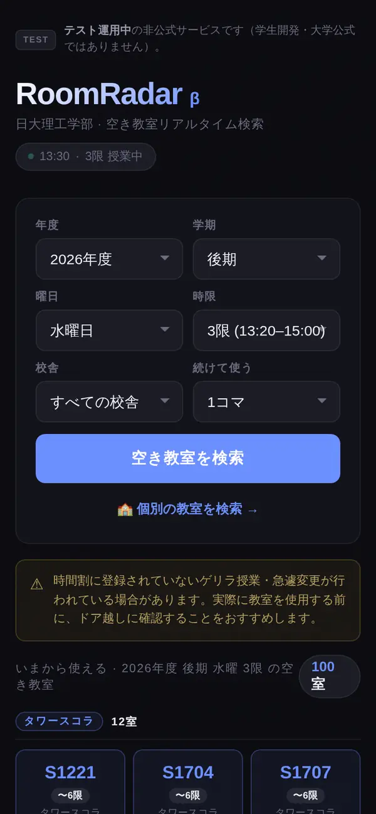

RoomRadar 空き教室、すぐ見つかる。 Find Empty Classrooms. Instantly. 立刻找到空教室。
時間割をもとに、開いた瞬間「いま使える教室」を一覧表示。曜日・時限を変えた検索や、教室ごとの1週間の確認もできます。 Built on the published class timetables: open it and see the rooms that are free right now. You can also search other days and periods, or check any room's week. 基于公开的课程表，打开即可看到现在可用的教室。也可以按星期、时段搜索，或查看某个教室一周的空闲情况。
今すぐ使う Open RoomRadar 立即使用 →※ RoomRadar 運営学生による非公式の学内アンケートより * From an unofficial student survey run by the RoomRadar team * 来自RoomRadar运营学生进行的非官方问卷
こんな経験、ありませんか？ Sound familiar? 有过这样的经历吗？
空き教室を探して、タワースコラを上から下まで歩き回った。 Wandered up and down Tower Schola looking for an empty room. 为了找空教室，把塔楼从上到下跑了个遍。
「空き」だと思って入ったら、授業中だった。 Accidentally walked into a class that was in session. 以为是空教室推门进去，结果正在上课。
教室探しだけで、平均15〜20分を毎回ロスしている（運営の非公式アンケートより）。 Losing 15–20 minutes on average just to find a place to study (from our unofficial survey). 光是找教室平均就要花15〜20分钟（来自运营方的非官方问卷）。
RoomRadarでできること What RoomRadar does RoomRadar能做什么
開くだけで、いま使える教室 Open it, see what's free 打开即看可用教室
検索ボタンを押さなくても、開いた瞬間に今の時限（休み時間なら次の時限）の空き教室が出ます。授業後・日曜は次の授業日の1限を表示します。 No need to press Search: rooms free in the current period (or the next one during breaks) appear as soon as you open it. After classes and on Sundays, it shows the next class day's 1st period. 无需点击搜索，打开即显示当前时段（课间则为下一时段）的空教室。下课后和周日显示下一个上课日的第1节。
2コマ続けて使える教室 Rooms free for 2+ periods 连续2节可用的教室
「続けて使う」で2コマ・3コマを選ぶと、その間ずっと空いている教室だけに絞れます。「〜6限」バッジで何限まで空いているかも一目でわかります。 Choose 2 or 3 periods under 「続けて使う」 (Consecutive) to see only rooms free the whole time. An 「〜6限」 (until P6) badge shows how long each room stays free. 在“続けて使う”（连续使用）中选择2节或3节，只显示这段时间一直空着的教室。“〜6限”（到第6节）标签显示可用到第几节。
個別の教室を検索 Look up any room 查询单个教室
教室名や番号（例: S303）で探すと、その教室の1週間の空きを月〜土×1〜6限の表で確かめられます。 Search by room name or number (e.g. S303) to see that room's week at a glance, Mon–Sat × periods 1–6. 按教室名称或编号（如S303）搜索，即可用周一至周六×第1〜6节的表格查看该教室一周的空闲情况。
仮予約（目安の共有） Tentative hold (unofficial) 临时占用登记（非官方）
教室をタップしてニックネームやグループ名（実名は不要）と目的を入れると、「この教室を使う予定」を他の利用者に共有できます。※RoomRadar上の目安の共有です。大学公式の予約ではなく、教室の使用権も保証しません。 Tap a room and enter a nickname or group name (no real name needed) and purpose to let others know you plan to use it. This is only a heads-up on RoomRadar — not an official university reservation, and it does not guarantee you can use the room. 点击教室并输入昵称或小组名（无需真实姓名）和用途，即可告诉其他用户你打算使用该教室。※仅为RoomRadar上的信息共享，并非大学官方预约，也不保证教室使用权。
使われていたら報告 Report a busy room 教室被占用时举报
時間割にない授業などで使われていたら報告できます。2件以上の報告で「使用中の可能性」と表示され、他の利用者に知らせます。 If a room turns out to be in use (e.g. an unscheduled class), report it. With 2+ reports it's marked 「使用中の可能性」 (may be in use) for others. 如发现教室因课表外授课等被占用，可以举报。2条以上举报后会显示“使用中の可能性”（可能正在使用），提醒其他用户。
隔週の授業・年度もわかる Alternate weeks & years 隔周课程与学年切换
隔週の授業だけが入っている教室は「週によっては空き」として別枠に表示。年度・学期も切り替えられます。 Rooms with only alternate-week classes are listed separately as 「週によっては空き」 (free some weeks). You can also switch the academic year and term. 只有隔周课程的教室会单独列为“週によっては空き”（部分周空闲）。还可以切换学年和学期。

3ステップで使える 3 Simple Steps 三步即可使用
サイトを開く Open the site 打开网站
開いた瞬間に、いま（休み時間なら次の時限）使える教室が出ます。登録やインストールは要りません。 The rooms free now (or in the next period during breaks) appear right away. No sign-up or install. 打开后立即显示现在（课间则为下一节）可用的教室。无需注册或安装。
必要なら条件を変える Change the search if needed 需要时更改条件
曜日・時限・校舎や「続けて使う」コマ数を選んで「空き教室を検索」。教室名から、その教室の1週間を見ることもできます。 Pick the day, period, building or how many periods in a row, then tap 「空き教室を検索」 (Search). You can also look up a room by name to see its week. 选择星期、时段、教学楼或连续节数，点击“空き教室を検索”（搜索空教室）。也可以按教室名查看该教室一周的情况。
ドア越しに確認して使う Check at the door, then use it 先在门口确认再使用
入る前にドア越しに確認を。必要なら仮予約（RoomRadar上の共有。大学公式ではなく、使用権の保証もありません）もできます。 Check through the door before going in. If you like, add a tentative hold (a heads-up on RoomRadar only — not an official reservation and no guarantee you can use the room). 进门前请先在门口确认。如有需要可进行临时占用登记（仅为RoomRadar上的共享，非大学官方预约，也不保证使用权）。
学生が作った、学生のための
サービスです。
Built by students,
for students.
由学生开发，
为学生服务。
物理学科 2年
経営学科 3年
物理学科 2年
物理学科 2年
環境安全工学科 2年
物理学科 2年
あなたの声で、もっと良くなる。 Help us make it better. 你的反馈让它更好。
さあ、教室を探しに行こう。
Stop wandering.
Start searching.
别再乱走了。
立刻开始搜索。
アプリのインストール不要。ブラウザだけで今すぐ使えます。 No app install needed. Works in any browser, right now. 无需安装应用。现在就可以在浏览器中使用。
RoomRadarを開く Open RoomRadar 打开RoomRadar →このサービスについて About this service 关于本服务
運営Who runs it运营
日本大学「自主創造プロジェクト」の一環として、理工学部の学生を中心に開発・運営しています。大学公式のサービスではなく、現在テスト運用中です。学内での正式な提供については調整中です。 Developed and run mainly by students of the College of Science and Technology as part of a Nihon University student project program. It is not an official university service and is currently in test operation. 作为日本大学学生项目的一部分，主要由理工学部的学生开发和运营。本服务并非大学官方服务，目前为测试运营中。
データData数据
教務ページで公開されている時間割表（2025・2026年度）をもとに、授業が入っていない教室を表示しています。「空き」は時間割上の空きで、使ってよいという許可ではありません。休講・補講・教室変更・試験・時間割にない授業は反映されないので、入る前にドア越しに確認してください。 Based on the published class timetables (AY2025–2026), it lists rooms with no scheduled class. “Free” means free on the timetable, not permission to use the room. Cancellations, make-up classes, room changes, exams and unscheduled use are not reflected — please check at the door. 根据公开的课程表（2025・2026学年）显示没有排课的教室。“空闲”仅指课表上空闲，并非使用许可。停课、补课、教室变更、考试及课表外使用不会反映，请在门口确认后再进入。
情報の扱いYour data信息处理
仮予約と「使われていた」の報告は、その時限が終わると自動で消えます。仮予約の名前欄には、実名など個人が特定できる情報を入れないでください。意見箱の内容は、改善のために運営メンバーが確認します。このページと検索アプリでは、利用状況を知るために Google アナリティクス（Cookie）を使っています。 Tentative holds and reports are deleted automatically when the period ends. Please don't put your real name or other personal details in a hold. Feedback is read by the team to improve the service. This page and the app use Google Analytics (cookies) to understand usage. 临时占用登记和举报会在该时段结束后自动删除。请不要在登记中填写真实姓名等个人信息。意见箱的内容由运营成员查看并用于改进。本页面和搜索应用使用Google Analytics（Cookie）了解使用情况。
最新情報・新機能・お役立ちTipsをInstagramで発信中。フォローして空き教室さがしをもっと快適に。 Latest updates, new features, and handy tips on Instagram. Follow us for a smoother classroom hunt. 在Instagram发布最新资讯、新功能和实用小贴士。关注我们，让找空教室更轻松。
フォローする Follow us 关注我们